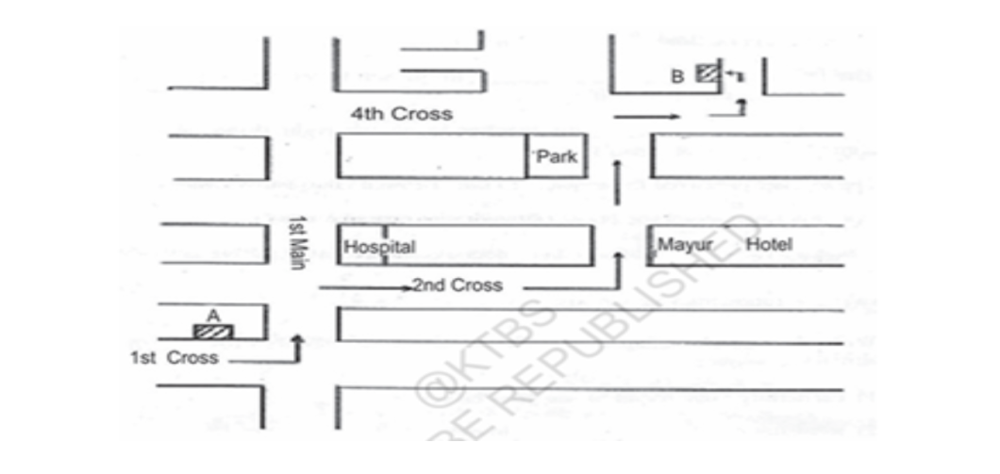
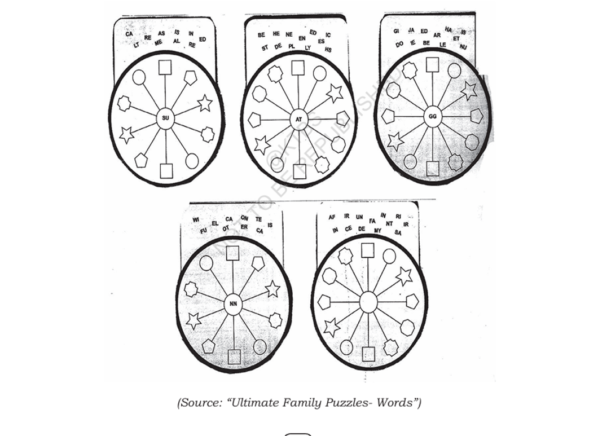

Learn with Poornima Notes
Karnataka State Board (KTBS) 2026–27
Karnataka State Board (KTBS) 2026–27
A Wrong Man in Workers' Paradise is a beautiful allegorical story by Rabindranath Tagore. It contrasts a society devoted only to work with the importance of imagination, creativity and beauty. The artist in the story transforms the lives of the people by introducing art into a world that values only usefulness.
Answer: The people in Workers' Paradise considered his work as "mad whims" because they believed only useful work had value.
| Comparison | Answer |
|---|---|
| Some boys | The man on Earth |
| They are not studying | The man doing no useful work |
| Yet passing in the test | The man entering Heaven |
Answer: The workers took pride in remaining busy all the time.
Answer: The torrent is silent because everything in Workers' Paradise is expected to work efficiently. Even nature is not allowed to express beauty freely.
Answer: She spent all her time working and never cared about beauty or appearance.
Answer: She pitied him because he had no work and seemed to have no purpose in life.
Answer: She secretly admired the beauty of the painted pot although society discouraged such appreciation.
Answer:
The girl gradually began to appreciate beauty and art. She realized that life
is not only about work but also about creativity and happiness.
Answer:
The elders became anxious because the wrong man's influence spread among the
people. They began to enjoy painting, beauty and art instead of working all
the time. This threatened the discipline of Workers' Paradise.
Answer:
The girl understood that life should include beauty, imagination and freedom.
Therefore she chose a new way of living.
Answer:
The man believed that life is not meant only for useful work.
Beauty, imagination, creativity and art are equally important because they
bring joy and meaning to life.
| Stage | Change in Behaviour |
|---|---|
| Before giving her pitcher | She believed only work was important. |
| After giving her pitcher | She became curious about beauty and art. |
| When the man offered ribbons | She began to enjoy beauty and self-expression. |
| When she followed him | She completely accepted a life filled with art, beauty and freedom. |
Answer:
Both deserve the credit.
The wrong man awakened the hidden love for beauty through his artistic talent.
The girl, however, had an open mind and was willing to change. Without her
readiness, the artist's influence would not have transformed her life.
Read the following extracts carefully. Discuss in pairs and then write the answers to the questions given below them.
Answer: It refers to the power of fate or destiny that records and decides the course of events. Even Heaven cannot escape destiny.
Answer: Personification (also interpreted as Metonymy). The "Moving Finger" represents fate as if it were a living being that writes.
Answer: It means that even in Heaven unexpected events can happen. The arrival of the wrong man shows that destiny works everywhere.
Answer: The wrong man (the artist) is compared to a lonely beggar.
Answer: She believed he had no useful work and therefore no purpose in life.
Answer: She offered to give him some work so that he could become useful.
Answer: She secretly admired the beautiful painting on her pitcher and began appreciating art.
Answer: It suggests her busy life that was completely devoted to work and efficiency.
Answer: The beauty created by the artist changed her attitude. She started valuing art, imagination and happiness along with work.
Discuss the answers to the following questions in pairs or groups of four. Individually note down the important points for each question and then develop them into paragraph answers.
Answer:
The two statements represent two completely different attitudes towards
life. The people in Workers' Paradise believe that every moment should be
spent in useful work. They consider hard work to be the only purpose of
life and take pride in being constantly busy.
On the other hand, the artist believes that life is incomplete without
beauty, imagination and creativity. He spends his time creating art
instead of doing mechanical work. While the workers value productivity,
the artist values self-expression. Tagore suggests that a balanced life
should include both work and creativity.
Answer:
Both worlds have their own strengths. Workers' Paradise is disciplined,
organized and productive, but it lacks joy, beauty and imagination.
The artist's world celebrates creativity, freedom and happiness but
cannot function without some amount of useful work.
Therefore, the ideal world is one that combines both. Human beings need
hard work for survival, but they also need art, music, beauty and
creativity to make life meaningful.
Conclusion:
A balanced society values both utility and aesthetics. Utility provides
the necessities of life, while art and knowledge provide happiness,
culture and emotional satisfaction. Tagore reminds us that people need
both work and beauty to live a complete life.
Fill in the blanks with the antonyms of the words underlined.
| No. | Question | Answer |
|---|---|---|
| 1 | The people utilize every minute of their life. Whereas the man __________ his time. | wastes |
| 2 | The busy farmers laughed at the __________ artist. | idle |
| 3 | Some students always work hard but many __________ do so. | seldom |
| 4 | Every individual must have confidence in his abilities. However, we notice __________ in many individuals. |
diffidence (or insecurity) |
| 5 | The workers thought that the artist was worthless whereas the girl of the silent torrent considered him __________. |
valuable (or worthy) |
Work in pairs and find out the meaning of the following phrasal verbs in a dictionary. Use them in sentences of your own.
| Phrasal Verb | Meaning | Example Sentence |
|---|---|---|
| Run away | To escape from a person or place. | The frightened cat ran away as soon as the dog barked. |
| Run down | To criticize someone or something. | It is unfair to run down your teammates when they are trying their best. |
| Run into | To meet someone by chance. | I ran into my old school teacher at the supermarket yesterday. |
| Run out | To use up the entire supply of something. | We have run out of milk, so please buy some. |
| Run around | To be very busy doing many different things. | I've been running around all morning finishing my work. |
| Go about | To continue or deal with something. | How should we go about organizing the school function? |
| Go away | To leave a place or person. | The teacher told the noisy students to go away. |
| Go ahead | To proceed or continue. | Please go ahead and start the meeting. |
| Go through | To examine or experience something carefully. | We need to go through all the files before making a decision. |
| Go along | To agree or accompany. | I am happy to go along with your suggestion. |
| Go into | To explain or examine in detail. | The teacher went into the topic in detail. |
| Take aback | To surprise or shock someone. | I was taken aback by his sudden announcement. |
| Take off | To remove or leave the ground. | The airplane took off on time. |
| Take on | To accept a responsibility. | She decided to take on the role of class leader. |
| Take over | To gain control of something. | A new manager will take over the company next month. |
Given below are some idioms and phrases used in the short story. Work in pairs. Spot them in the story and use them in sentences of your own.
| Idiom / Phrase | Meaning | Example Sentence |
|---|---|---|
| Indulge in | To allow oneself to enjoy or do something. | On weekends, I love to indulge in reading mystery novels. |
| Take to task | To criticize or scold someone for a mistake. | The teacher took the student to task for not completing the homework. |
| Come to pass | To happen or occur. | It finally came to pass that the two friends met again. |
| Take charge of | To assume responsibility or control. | The senior officer took charge of the rescue operation. |
| Get the better of | To defeat or overcome someone or something. | Don't let fear get the better of you before the examination. |
| Be filled with | To be completely occupied by an emotion. | She was filled with joy after hearing the good news. |
| Shake off | To get rid of something unpleasant. | He tried to shake off his worries before the interview. |
| Set out for | To begin a journey towards a place. | We set out for Mysuru early in the morning. |
| Laugh at | To mock or make fun of someone. | We should never laugh at people who make mistakes. |
Write one meaningful sentence of your own using each idiom and phrase. This activity will improve your vocabulary and spoken English.
The purpose of reading determines the way we read a passage. Reading for the main idea is called Skimming. Reading for specific information is called Scanning.
Read the following news item carefully.
A Korean Airbus with 199 passengers crashed 5 km away from Tripoli Airport in Libya and burst into flames, killing at least 100 people. The official Libyan News Agency reported that the aircraft fell on two houses. The crash occurred at 7:00 a.m., about 25 minutes before the scheduled landing.
Correct Answer: Hundred feared killed in plane crash
This heading best summarizes the main idea of the news report because the most important information is the heavy loss of life.
Study the following Railway Time Table and answer the questions.
| Train | Departure | Destination | Arrival | Days |
|---|---|---|---|---|
| Gol Gumbaz Express | 19:45 | Vijayapura | 10:30 | Mon, Wed, Fri |
| Siddaganga Express | 13:00 | Hubballi | 21:00 | Daily |
| Brindavan Express | 06:00 | Chennai | 13:30 | Sun, Tue, Thu |
Look at the conversations in the story between the girl and the man from:
Work in pairs. One student takes the role of The Man and the other takes the role of The Girl. Read the dialogues aloud with proper expression and voice modulation.
"The man asked the girl, Will you give me one of your pitchers?" This is a polite request.
There are several polite ways of making requests.
Work in pairs and make suitable requests for the following situations.
You stop a biker and his friend and politely request them to help you push the car to the side.
Option 1:
Excuse me, my car has broken down. Could you please help me push it to the side of the road?
Option 2:
Would you mind helping me move my car to the roadside?
Option 3:
Could you spare a few minutes to help me push my car? I would be very grateful.
Your grandfather is critically ill and you wish to stay with him.
Option 1:
Respected Headmaster, I request you to kindly grant me 15 days' leave as my grandfather is critically ill.
Option 2:
Would you kindly grant me 15 days' leave? I need to stay with my grandfather during this difficult time.
Option 3:
Could you please consider my request for 15 days' leave? I assure you that I will complete all my pending work after returning.
Study the map carefully and give directions to your friend to reach Point B from Point A using all the landmarks shown on the map.

Figure: Route from Point A to Point B
Peter plans to spend a week in Ooty with his family. He approaches a travel agent to make arrangements for the trip. Read the following conversation and role-play it with your partner.
Fill in the blanks with the correct indefinite article 'a' or 'an'.
| No. | Sentence | Answer |
|---|---|---|
| 1 | His long nose gives him ____ unique feature. | a |
| 2 | Looking at him I said that he must be ____ European. | a |
| 3 | I met him ____ year ago. | a |
| 4 | Walk fast. You are ____ young person, not ____ old man. | a, an |
| 5 | It was ____ unanimous decision. | a |
| 6 | Ivanhoe is ____ historical novel. | a |
| 7 | We had ____ hour of English. | an |
| 8 | Modesty is ____ womanly grace. | a |
| 9 | The Cyclop was ____ one-eyed monster. | a |
| 10 | My sister is ____ M.A. in English. | an |
| 11 | Satish was ____ N.C.C. cadet. | an |
| 12 | On his doctor's advice, he had ____ X-ray taken. | an |
| 13 | This doctor is ____ F.R.C.S. | an |
| 14 | My name begins with ____ "H". | an |
| 15 | It surely was ____ historical event. | a |
Use a before words beginning with a consonant sound. Examples: a university, a European, a one-eyed monster
Use an before words beginning with a vowel sound. Examples: an hour, an M.A., an NCC cadet, an X-ray
Fill in the blanks with a, an, or the wherever necessary. There are some blanks where no article is required.
| No. | Sentence | Answer |
|---|---|---|
| 1 | There is ____ fly in ____ coffee. | a, the |
| 2 | ____ book you wanted is not in the library. | The |
| 3 | ____ cow is ____ useful animal. | The, a |
| 4 | ____ Mount Everest is ____ tallest peak in ____ Himalayas. | —, the, the |
| 5 | "Where is Esther?" She has gone to ____ school. | — |
| 6 | ____ Cauvery flows into ____ Bay of Bengal. | The, the |
| 7 | I love stories from ____ Ramayana and ____ Mahabharata. | the, the |
| 8 | Hamlet is ____ greatest tragedy of ____ Shakespeare. | the, — |
| 9 | Joshua plays ____ piano well. His parents bought him ____ new piano. | the, a |
| 10 | The climax is in ____ 10th chapter, not in ____ chapter 9. | the, — |
| 11 | My uncle is still in ____ hospital. If you go to ____ hospital you can see him. | —, the |
| 12 | I am going to ____ market. You have to go to ____ school. | the, — |
| 13 | Dad, is ____ aunt coming with ____ uncle? | an, an |
| 14 | ____ kindness is a great virtue. I cannot forget ____ kindness he showered on me. | —, the |
| 15 | ____ English is ____ universal language. I learnt English at ____ school. | —, a, — |
Fill in the blanks with suitable prepositions.
| No. | Sentence | Answer |
|---|---|---|
| 1 | This table is made ____ wood. | of |
| 2 | I expected ____ him a better performance. | from |
| 3 | He is a man ____ a fine sense of humour. | with |
| 4 | I saw a beautiful girl ____ a limp. | with |
| 5 | The purse fell out ____ his pocket. | of |
| 6 | She often quotes ____ Shakespeare. | from |
| 7 | Our examinations begin ____ 15th April. | on |
| 8 | I had a message ____ a friend. | from |
| 9 | He hit her ____ the head with a bottle. | on |
| 10 | Neeta was angry ____ what I had said. | at / with |
| 11 | This is an idea I entirely agree ____. | with |
| 12 | Please convey my best wishes ____ him. | to |
| 13 | He enquired ____ me what he should do. | of |
| 14 | Please inform me ____ the details of the scheme. | of / about |
| 15 | I request you to intimate ____ me what he should do. | to |
| 16 | Students must opt ____ two of the three courses offered. | for |
| 17 | He prayed ____ God for help. | to |
| 18 | They presented him ____ a gold watch. | with |
| 19 | Please refer ____ your letter of July. | to |
| 20 | This figure is wrong; please strike it ____. | out |
Read the passage carefully and observe the correct use of Articles and Prepositions.
East Taiwan consists of Hualien and Taitung counties. The area covers 8,143 square kilometers, about one-fifth of Taiwan's total area, but has a population of only 610,000 or just three percent of the population of Taiwan. Communities are usually found in the few scattered flat areas. The administration centres, Hualien City and Taitung City, are located in the north and south of the area respectively.
Apart from these two cities, there are more than twenty towns and villages scattered throughout the area, so you will not find yourself alone while travelling.
East Taiwan faces the Pacific Ocean and is bounded on the west by the Central Range. A 170-km-long Coastal Range bisects the region, running parallel to the coast.
The total length of East Taiwan's coastline is over 300 kilometres. Numerous scenic places are to be found in this exceptional geographical environment. The region also encompasses two islands lying just off the coast opposite Taitung County, Green Island and Orchid Island.
These tiny islands, only 16 square kilometres and 46 square kilometres respectively, have some marvellous scenery both below and above the high-water mark.
The grid below shows a central circle surrounded by different shapes. Place each set of two-letter groups, one per shape, so that every set of three (the centre circle and the two opposite shapes) forms a six-letter word.

| Puzzle | Middle Letters | Example Words |
|---|---|---|
| 1 | SU | ASSUME, INSULT, ISSUED, RESUME |
| 2 | AT | BEATEN, HEATED, PLATES, STATUS |
| 3 | GG | JAGGED, GIGGED |
| 4 | NN | WINNER, TENNIS, FUNNEL, CANNED |
| 5 | (Students can complete) | INFANT, FACET, INCENT and other suitable six-letter words. |